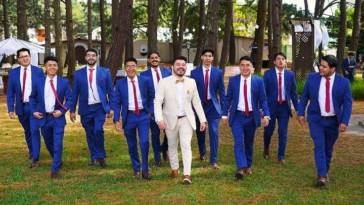
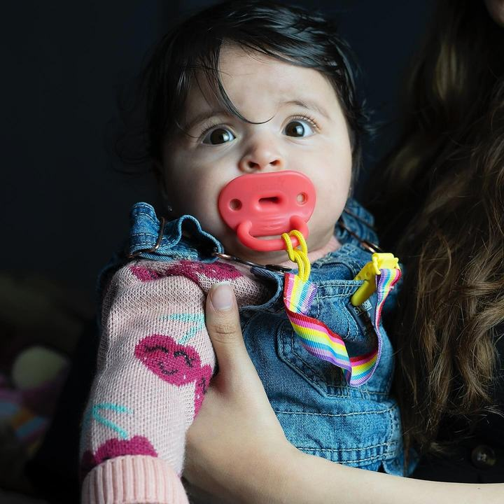
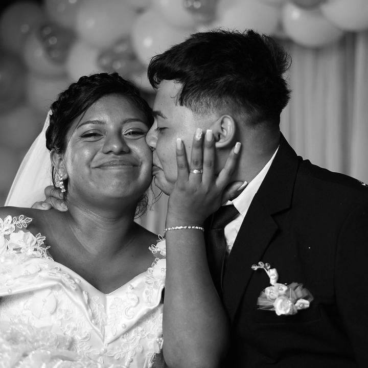
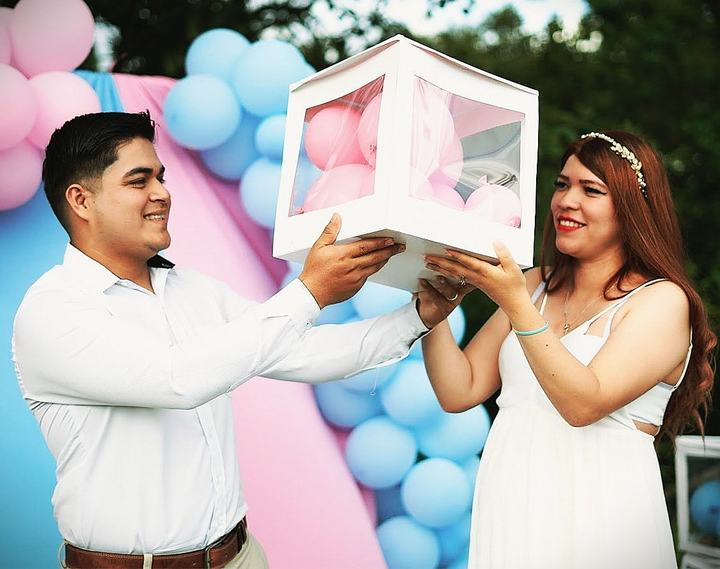
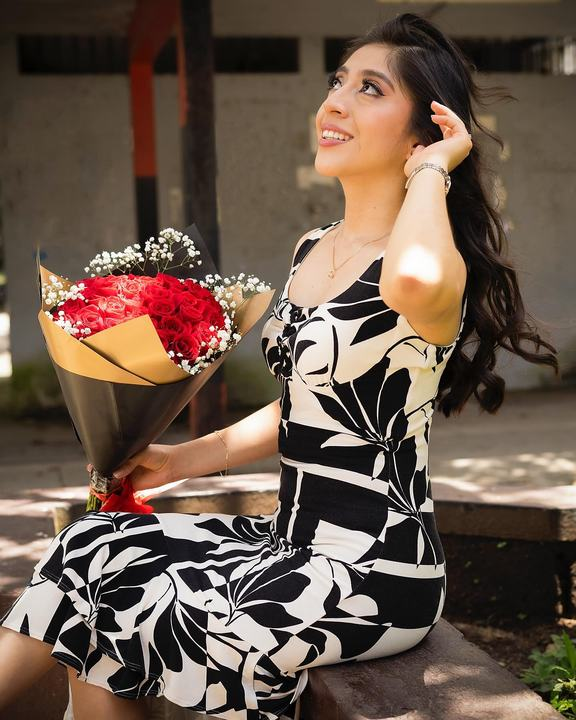
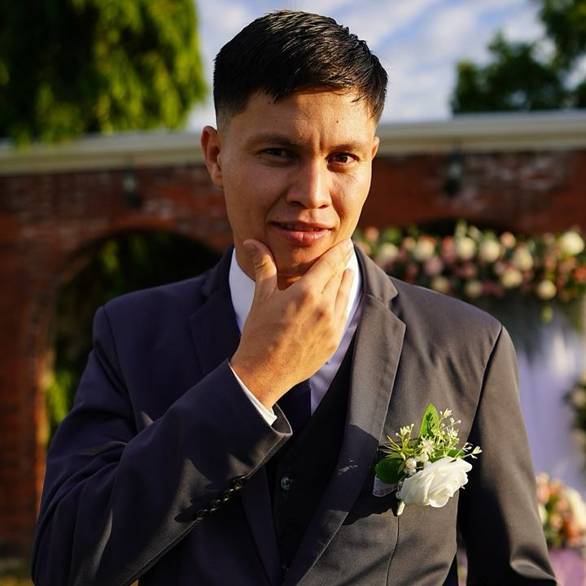

Bodas
Desde los preparativos hasta el último baile. Fotografía a color y blanco y negro, más el video del día completo.
Fotografía y video · Ciudad de Guatemala
Somos un equipo que graba y fotografía bodas, graduaciones y celebraciones en Guatemala. Llegamos temprano, nos quedamos hasta el final y te devolvemos el día completo.
Lo que hacemos
Por eso trabajamos como equipo. Nos distribuimos en cada momento para capturar la historia desde diferentes perspectivas: la emoción, los detalles y esos instantes espontáneos que muchas veces pasan desapercibidos. Así logramos contar tu historia de una forma más completa, auténtica y cinematográfica.
Desde los preparativos hasta el último baile. Fotografía a color y blanco y negro, más el video del día completo.
Graduaciones, baby showers y revelaciones de género. La fiesta entera: los discursos, los abrazos y todo lo que pasa cuando nadie está posando.
Sesiones de retrato, videoclips y contenido vertical para redes. Producción desde la idea hasta la entrega.
Hoja de contactos






Contános qué vas a celebrar y te mandamos una cotización con lo que incluye, sin compromiso.